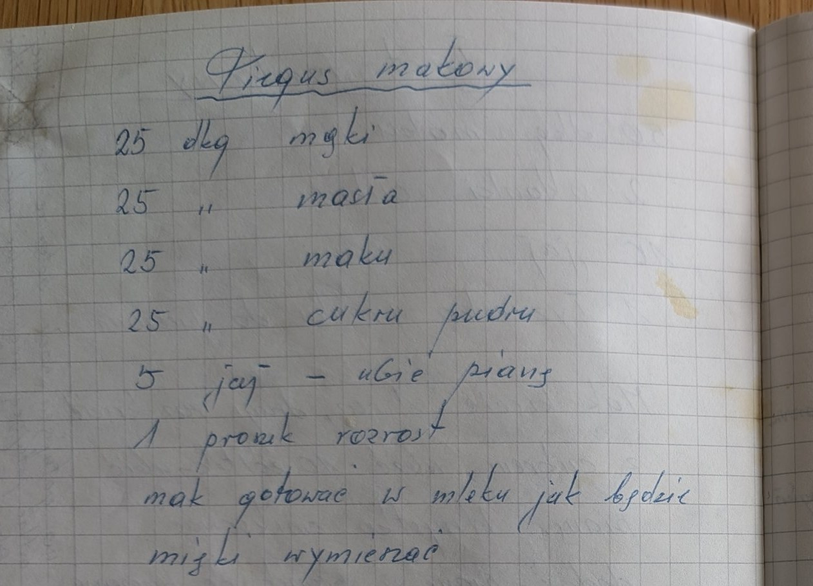

Piegus makowy


Składniki
- 25 dkg mąki
- 25 dkg masła
- 25 dkg maku
- 25 dkg cukru pudru
- 5 jaj
- 1 proszek „Rozrost”
- mleko (do gotowania maku)
Przygotowanie
- Z jaj ubić pianę.
- Mak gotować w mleku, jak będzie miękki – wymieszać.
Oryginalny zapis
Piegus makowy 25 dkg mąki 25 " masła 25 " maku 25 " cukru pudru 5 jaj – ubić pianę 1 proszek rozrost mak gotować w mleku jak będzie miękki wymieszać